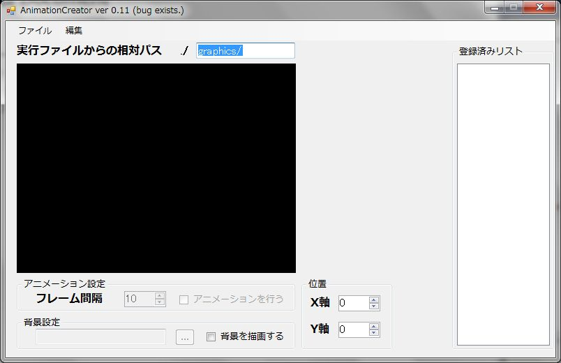
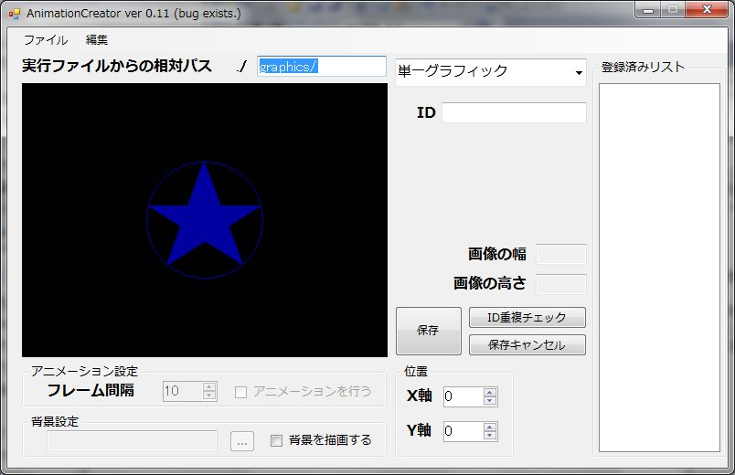
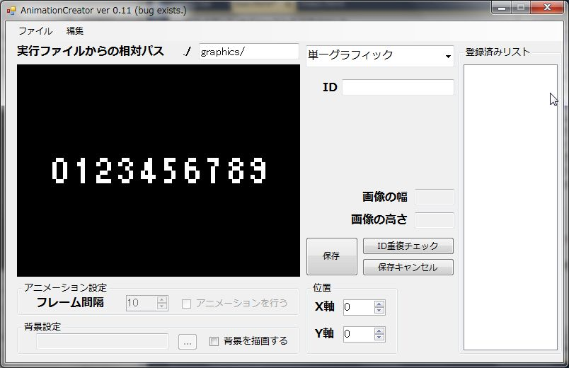
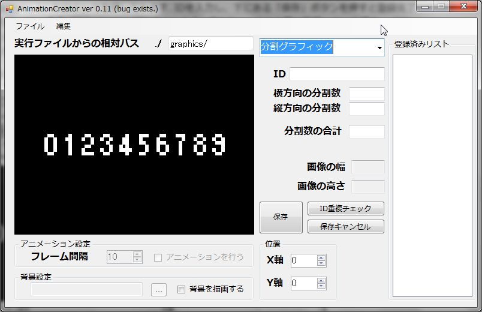
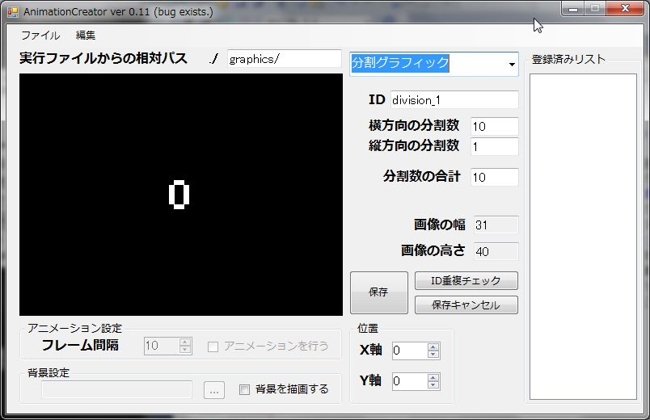
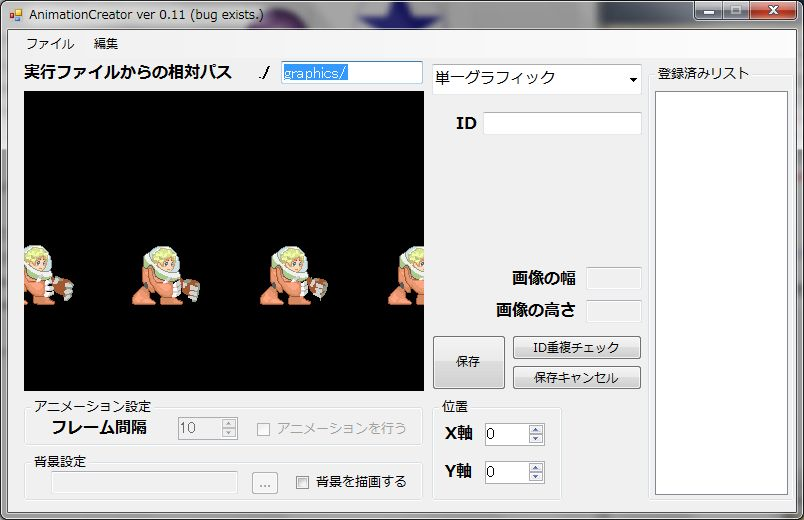
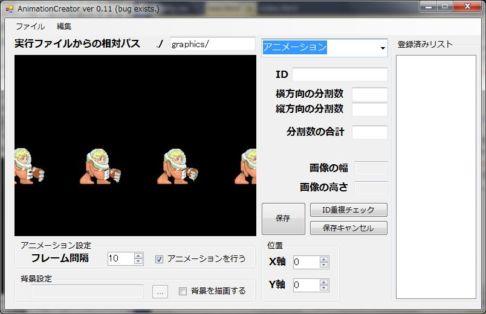
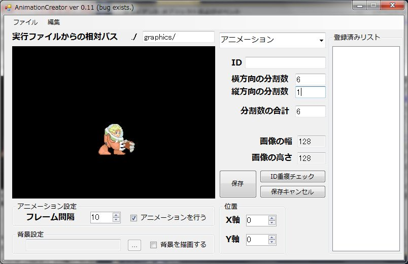
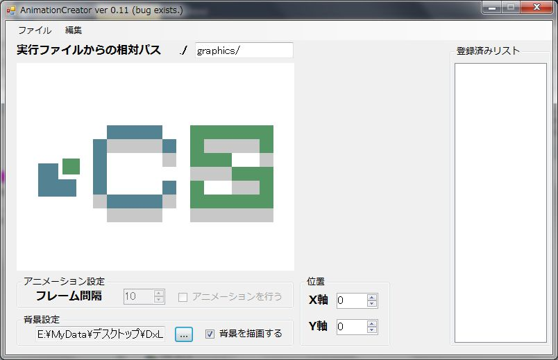
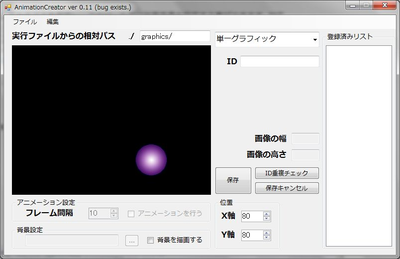

1. 実行
ダウンロードし、解凍したディレクトリの中に「bin」ディレクトリがあります.
そのディレクトリ内にある「AnimationCreator.exe」がツールの実行ファイルです.
実行すると、下記のようなウィンドウが表示されることを確認してください.

2. グラフィックの種類について
ツール利用において、グラフィックの種類について定義する必要があります. 以下は、このツールで登録する際に指定できるグラフィックの種類です.
-
単一グラフィック
画像ファイルを、そのまま1枚のグラフィックとして読み込ませる、最も基本的なグラフィック情報です. -
分割グラフィック
画像ファイルを、幾つかのグラフィックが描かれているものとして読み込ませます.
例としては、数字のグラフィックを列挙した画像ファイルが考えられます. -
アニメーション
画像ファイルを、アニメーションとして再生可能なグラフィック群として読み込ませます.
基本情報は分割グラフィックと同等ですが、アニメーションが可能なように切替を行うフレーム間隔が指定されます.
以上の定義を用いて、ツールの使い方を説明します.
3. 画像フォーマット対応について
このツールが取り扱える画像フォーマットは、JPEG, PNG, BMPの3種類です. 注意してください.
4. 実行ファイルからの相対パス
ウィンドウをみると、「実行ファイルからの相対パス」という項目があり、「graphics/」と入力されているテキストボックスがあります.
これは、登録する画像ファイルを実行ファイル(.exe形式)から見た時、どのディレクトリに存在するかを指定するものです.
デフォルトのままで問題ない場合はそのままにしておくのが無難かと思われます.
5. 単一グラフィックの登録
単一のグラフィック(例. simple.png)を登録してみます.
新規登録は、画像ファイルをドラッグドロップするか、メニューバーの「編集」から「エントリの追加」で可能です.
画像ファイルをドラッグドロップすると以下のようになります.

左側には、ドラッグドロップした画像(simple.png)がプレビューとして描画されています.
右側には、「単一グラフィック」と書かれたコンボボックスと、IDを指定できるテキストボックスが表示されます.
単一グラフィックは、1枚の画像がそのまま1つのグラフィックとして利用されるので、指定するのはこのグラフィックを示すIDのみです.
試しに「simple_1」をIDとして登録してみます. IDを入力し、下にある「保存」ボタンを押すと登録完了です.
この時、IDに重複があればエラーが出力されます. グラフィックを大量に登録している場合、「ID重複チェック」ボタンでチェックすると良いでしょう.
登録すると一番右にある「登録済みリスト」にIDでデータが登録されます.
6. 分割グラフィックの登録
分割グラフィックの数字を羅列した画像(division.png)を登録してみます.
画像ファイルをドラッグドロップすると以下のように単一のグラフィックとして一度表示されます.

このままでは、単一のグラフィックとして保存してしまうので、右側のコンボボックスから「分割グラフィック」を選択します.
選択すると、以下の図のようにIDを指定するテキストボックスに幾つかの項目が追加されていると思います.

新しく「横方向の分割数」「縦方向の分割数」「分割数の合計」などと言ったテキストボックスが追加されていると思います.
ここには、この画像をどのような分割グラフィックとして認識するのか、というパラメータを記述します.
例に使っているdivision.pngは横方向に10個の数字が並んでおり、縦方向には1個並んでいる状態なので、以下のように入力します.
分割数合計は、自動的に算出されますが、自分で書き変えることも可能です.

左のプレビュー画像が変化しています. これは、入力されたパラメータに従ってグラフィックを分割した結果、一番最初のグラフィックを描画しています.
また、「画像の幅」「画像の高さ」も分割された1枚のグラフィックの幅と高さを表示するように変わっています.
正しく分割されているのかを見る場合は、後述のアニメーションの登録を参考にアニメーションのプレビューを利用すると良いかもしれません.
7. アニメーションの登録
1つのアニメーションとしてある画像(animation.png)を登録してみます.
画像ファイルをドラッグドロップすると以下のように単一のグラフィックとして一度表示されます.

（注意：画像が途切れていますが、次バージョン以降で修正予定です.)
次に、コンボボックスから「アニメーション」を選択し、アニメーションとして保存するためのパラメータを表示させます.
選択した状態がこの以下のようになります.

右側に表示されているパラメータは分割グラフィックと全く同じことが伺えます. 左下に注目してください.
「アニメーション設定」の欄が有効になっていることが確認できると思います.
この部分でアニメーションを切り替える「フレーム間隔」を設定でき、また実際に60FPS環境下ではどのように再生されるのかリアルタイムに表示できます.
自動再生は「アニメーションを行う」のチェックを外すことで止められます.
パラメータを設定し、アニメーションを行えるようにしてみましょう. この画像は横に6個、縦に1個並んでいる状態なので、以下の図のように記述します.
すると、指定されたパラメータに従ってアニメーションが自動再生されます.

フレーム間隔を調整することで、アニメーションを好きな速度で再生できます.
次バージョン以降でFPSの設定、及び実測値が見れるようにする予定です.
8. グラフィックのリストを保存
グラフィックを登録したら、ランタイムライブラリが利用できる形にするため、リスト及びグラフィックを保存します.
メニューバーの「ファイル」から「名前を付けて保存」が可能です.
この時リストはxmlファイルとして保存されます. 何らかの一意名前を設定し保存してください.
この時、全ての画像ファイルを「実行ファイルからの相対パス」に指定されたディレクトリを作成しコピーします.
このコピー操作に幾許かの時間がかかりますのでご注意ください.
次バージョン以降でプログレスダイアログを表示し処理時間のおおよそを表示する予定です.
コピー操作も終わると、指定ディレクトリにxmlファイル及び画像ファイルをコピーしたディレクトリが作成されます.
この2つは常に一対です. 必ず2つとも持ち回ってください.
次バージョン以降で1つのファイルに全てまとめるように改造するかも知れません.
9. 背景の描画と描画位置移動
背景描画
実際にゲームで描画してみることを仮定し、このツールでは背景画像を設定する事ができます.
対応フォーマットはグラフィックと同じです.
左下にある「背景を描画する」にチェックを入れることで、背景画像を設定できます.
実際にbackground.pngとして設定した画像が以下のようになります.

「背景を描画する」のチェックを外すことで、描画しないこともできます.
描画位置の移動
描画位置調整のため、元の描画位置を座標(0,0)として座標を移動できます.
増加方向は、X方向は右、Y方向が下になっています.
描画サイズが400 * 300なので、Xの範囲は[-200,200]、Yの範囲は[-150,150]です.
XとYを80ずつ移動させた場合の例を示します.

copyright (C) 2011 krustf